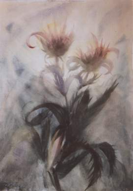

Kerstrozen
De sprookjesachtige verhalenrijkdom van ‘Kerstrozen’ neemt ons mee naar een belevingswereld, waar we de dingen weer met onze werkelijke (geestelijke) ogen leren zien.
Al lezende dringen diepe geestelijke waarheden tot ons door, waar de verhalen mee doorspekt zijn. Om in één adem uit te lezen, maar ook telkens weer te herlezen. Naast vele reproducties staan in dit boek ook Prantls gedichten. Het is hier duidelijk merkbaar dat geestelijke werkelijkheden in feite niet met aardse woorden te beschrijven zijn. Prantl gebruikt dan ook warme, meeslepende, hoogreikende beelden om ons als het ware ‘mee te nemen’ naar wat hij wil tonen. Hij was een Oostenrijker en als zodanig goed bekend met de indrukwekkende schoonheid van een majestueus berglandschap met zijn luchten, bloemen, weiden, hoogten en diepten - ook in geestelijke zin.
Een bundeling van verhalen, sprookjes, gedichten en schilderijen van de Oostenrijkse dichter, schilder en mysticus Max Prantl. In het boek springen vooral de full-colour reproducties van ongeveer 30 schilderijen in het oog - een nog niet eerder gepubliceerde collectie - terwijl de inhoud als geheel een indringend beeld geeft van de belevingswereld van Prantl. Uit de inleiding:
Max Prantl schreef verschillende boeken. Was “Het Stralende Hart” het indringende verslag van zijn persoonlijke geestelijke queeste, terwijl 'Onbegrepen licht' de esoterische achtergronden van zijn geestelijke bewustzijn onverkort naar voren brengt - 'Kerstrozen' is uiterlijk gezien weer van geheel andere aard. Sprookjesachtig, verhalend, symbolisch en beeldend als het is geeft het niettemin als het ware in onderhuidse grondtonen dezelfde krachtige levensvisie van Prantl weer.
Al lezend ontkomt niemand aan de onuitwisbare indruk, die dit werk achterlaat. Maar het is een indruk die in eerste instantie niet in woorden te vatten is. Het doet enigszins denken aan een situatie, waarbij iemand een bepaald woord zoekt 'dat op het puntje van zijn tong ligt', alsof het bijna vergeten was en toch ook weer niet - bijna als een betovering, vaag bewust en toch onderbewust. Om die reden is dan ook gekozen voor de huidige samenstelling van schilderingen, sprookjesachtige verhalen en gedichten, die alle langs aansprekende, symbolische weg ons diepere bewustzijn raken.
Citaten
… Wie God in zijn aardse werkzaamheid en daardoor alle mensen en wezens wil helpen, moet allereerst één ding doen: laat hij het wagen gelukkig te willen zijn. Laat hij vrede sluiten met zijn geweten. Hij moet niet méér willen doen dan hem op dat moment en binnen zijn terrein zonder rusteloosheid, zonder gejaagdheid mogelijk is. Van een dergelijke rusteloosheid is verkapte eerzucht of een verkeerd gebruik van zijn krachten de drijfveer. Laat hij eerst recht doen aan de eisen van zijn omgeving, zijn beroep en het aardse leven van alledag. Laat hij zichverheugen, zij het ook over de kleinste dingen. Laat hij de heilloze neiging tot zelfkwelling, tot het bespotten van zichzelf, tot vernedering van zijn lichaam en zijn ziel opgeven. Daarmee treft hij zijn hart, zijn levenscentrum en daarmee God in zijn aardse deel. Voor hem als aardse mens zijn deze ‘zelfkwellingen’, dit bespotten van zichzelf en deze vernedering een lust, anders zou hij het niet doen, ook al spiegelt hij zichzelf voor dat hij daarbij kwellingen ondergaat. God draagt deze kwelling. Maar de mens verwoest daardoor echter zichzelf en vindt, als hij erin volhardt, onvermijdelijk zijn aardse en eeuwige ondergang.
Laat de mens steeds voor de dag zelf zorgen en alleen het werkelijk nodige plannen, dat vandaag al bedacht en voor later voorbereid moet worden. Laat hij zich niet wentelen in kommer en zorgen. Laat hij het wagen het leven te beamen en niet meer te ontkennen. Als hij zo een begin heeft gemaakt – en zonder dit neemt hij innerlijk niets aan – zullen hem meer en steeds grotere dingen gegeven worden. En op de juiste tijd zal zijn tuin, de tuin van zijn ziel vol bloeiende bloemen staan...
... Enno keek er met flitsende ogen naar en stampvoette vol woede. Hij ging er naartoe. ‘Eva Maria!’, stootte hij hees uit. Hoogmoedig wierp ze haar hoofd naar achteren. ‘Ben ik er soms alleen voor jou?’, vroeg ze spottend. Enno werd bleek. Hij plantte zich pal voor Rupert. Toen werd er benig en hol op de ramen geklopt. Eva Maria schrok. ‘Wat is dat?’, vroeg ze toonloos. ‘Een tak’, antwoordde Rupert onverschillig, ‘de storm schudt de bomen heen en weer’.
‘Dansen, dames en heren!’, riep een stem die van buiten leek te komen. Lawaaierige instemming was het antwoord. De muziek zette in, lichte, zwierige melodieën en gelach vulden de ruimte, een zorgeloze roes greep de menigte in de zaal aan, het was niet meer de stemming voor ernstige confrontaties.
In de ahornboom voor het raam zat de tovenaar. Hij had reeds urenlang alles gadegeslagen en richting aan de stemming gegeven. Nu grijnsde hij geil. ‘Het moment voor mij is gekomen. De appel is rijp’. Als een afzichtelijke raaf met begerig-listige ogen wiegde hij op zijn tak heen en weer en gluurde vergenoegd de zaal in, waar de menigte uitgelaten door elkaar golfde. Woedend rukte de storm aan de ahornboom en schudde de takken. De tovenaar begon met een zeurderige stem te zingen. ‘Wat kraakt en kreunt die boom vandaag!’, zei Eva Maria huiverend tegen Rupert. ‘Luguber is het, heel anders dan anders’. Rupert glimlachte, zeker van zijn overwinning. ‘Ja, de storm!’, zei hij. ‘Dan kreunt de boom wel, als hij daardoor gegrepen wordt’...
…‘Eva!’, klonk daar een stem op de gang voor de deur van haar kamer. Verschrikt stond ze half van haar bed op. ‘Wat is er?’ ‘Wees heel stil’, fluisterde de stem weer, ‘ik ben het, Rupert’. ‘Ga toch, ga weg!’ ‘Eva, mooiste vrouw, hoor je hoe de bomen kreunen in de storm? Ze kreunen en wiegen in kwellende lust. Heel gauw, nog voor de ochtend aanbreekt zul ook jij kreunend en bevend in mijn armen liggen. Weerloos ben je tegenover mij, een slachtoffer van de nacht en je eigen wensen. Je beeft immers al voor mij, je weet immers zelf dat je verzet alleen nog maar een zinloze kwelling is. Geef je over, doe open, laat me binnen!' Verdoofd, willoos, als in de ban van de begeerte in haar stond ze op, tastte naar de grendel op de deur en schoof hem terug. Langzaam, zonder geluid ging de deur open. Eva Maria schrok achteruit. Niets dan ondoordringbare duisternis als een afgrond leek daar buiten te loeren. Toen stond er plotseling heel dicht voor haar een gestalte, duisterder dan de afgrond. In een laatste afweer hief Eva Maria haar handen op. ‘Niet doen, Rupert, nee!’ Toen perste een kleverige hand zich op haar mond. Een lichtstraal van buiten viel flakkerend op het gezicht van de indringer. Ze kende het niet. Het leek op de kop van een gier, wellustig schoven de lippen als een snavel naar voren, gretig, wreed glinsterden de ogen. Met een snel gesmoorde kreet bezweek Eva Maria...
…Wat zijn tegenwoordig de doop en het vormsel nog? Een leeg magisch ritueel dat geen enkele relatie meer heeft met zijn vroegere betekenis: een hulpmiddel bij, een vergemakkelijking van het geestelijk ontwaken te zijn. Wat is tegenwoordig nog de Heilige Communie? Een cultisch verstarde isolering van een algemeen geldige waarheid. Toen Jezus dit sacrament voor een nog onrijper ontwikkelingsniveau instelde, zei hij niet, wijzend op brood en wijn, de edelste vruchten van de aarde: ‘Dit ben ik’, maar: ‘Dit is mijn lichaam, dit is mijn bloed’. Dat moest de mensen eraan herinneren dat al het aardse, het gehele heelal, beleefd kan worden als het lichaam en bloed van Christus, van de Wereldgeest zelf. Als de mens zich iets in aardse zin eigen maakt, hetzij lichamelijk hetzij geestelijk voedsel, dan zou hij het in deze zin moeten doen. Alleen zo kan het aardse geheiligd worden. De beperking van dit sacrament - d.w.z. deze brug naar de waarheid, naar het ware leven - tot brood en wijn is allang achterhaald, overeenkomstig het diepere begrip van de mensheid voor het geestelijke. De kerk handelt hier en ook op andere punten als een slechte leraar, die zijn leerlingen niet boven de aanvankelijke beginselen van kennis uit wil laten komen, uit angst dat hij anders zijn macht over hen zal kwijtraken. - Wat zijn de kerkelijke - en wereldse - huwelijksplechtigheden? Allang niet meer dan een prostitutie van de heiligste band tussen twee mensen ten overstaan van de starende menigte. Wat zijn de kerkelijke en wereldse begrafenisgebruiken? Het absurd plechtige begraven van een afgelegd kleed. Daarom zei Jezus: ‘Laat de - geestelijk - doden, de materialisten, hun doden (plechtig) begraven’. Het afgelegde lichamelijke kleed van een mens zou in alle stilte aan de aarde of het vuur toevertrouwd moeten worden. Nergens staat de overledene verder van zijn vrienden af dan in de nabijheid van zijn ontbindende lijk, zijn graf of zijn asurn. Enkel volslagen verblinden of geestelijk doden bedrijven een cultus met lijken, graven, urnen, mummies en relikwieën. Als iemand als hulpmiddel bij de rechtstreekse verbinding met een geliefde overledene een materiële brug nodig heeft, laat hij dan een foto nemen, een brief, een boek waar de overledene van gehouden heeft, wat van zijn haar of zijn kleren. En als je voor een stervende de angst voor zijn laatste uur op aarde wilt wegnemen, kun je niets beters doen dan met innerlijke overtuiging over de onsterfelijkheid van zijn geestelijke wezen, over de rechtstreekse verbinding met zijn geliefden op aarde en over de Oneindige Liefde van God spreken, met weinig woorden en geconcentreerde kracht...